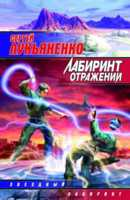
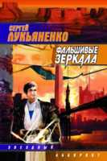

Что бы ни говорили критики о фильме “Ночной дозор”, факт остается фактом — экранная магия Иных послужила своеобразным ледоколом, освободившим путь затертому во льдах фрегату по имени “Российский кинематограф”. Теперь впереди только свободная вода — по крайней мере, до тех пор, пока по этому пути не пройдут такие перспективные проекты отечественной кинофантастики, как “Волкодав” Николая Лебедева и “Глубина” Михаила Хлебородова.
“Мир фантастики” регулярно сообщает новости о съемках “Волкодава” и “Ночного дозора-2”. Теперь мы предлагаем эксклюзивный рассказ о старте нового проекта “Первого канала”. Это экранизация культового романа Сергея Лукьяненко “Лабиринт отражений”.
Актер Гоша Куценко и продюсер Юсуп Бахшиев готовы превратить культовый текст Лукьяненко в фантастический блокбастер.
Книга “Лабиринт отражений” началась со спора фантаста Сергея Лукьяненко и художницы Яны Ашмариной. Спорили о возможности написать не типичный (асоциальный, бунтарский, “панковский”), а лирический, нравственный, бытовой киберпанк. Сергей Лукьяненко, уже выпустивший к тому времени несколько книг, вышел из спора победителем.
Именно такую кинофантастику жаждет видеть наш зритель — качественно и принципиально отличающуюся от имеющихся образцов. Потому что она стоит ближе к людям. Смотришь на экран — и видишь собственное отражение.
Наверное, по этой же причине фильм “Глубина” не позиционируется как киберпанк. Вачовски тоже никак не определяли свою “Матрицу”. Фанаты сами завели спор о принадлежности одного из лучших фильмов девяностых к революционному течению. И уж ни о каких ярлыках не думал Ридли Скотт, создавая “Бегущего по лезвию”.
Режиссер фильма Михаил Хлебородов признается, что из всей литературы фантастика ему ближе всего, ведь в юности он тратил свободное время на просмотр “импортных” фантастических фильмов вроде “Чужого” и “Хищника”. Книга Лукьяненко очень понравилась талантливому клипмейкеру, и он с особенным удовольствием взялся за подготовку к ее экранизации.
Изначально сценаристами были назначены киевские писатели Марина и Сергей Дьяченко — сценарий, написанный ими, отлично передавал дух книги. Но он был слишком литературным и не очень-то годился для экшена. Была предпринята попытка режиссера и сценаристов объединить усилия, но помешало расстояние между столицами, которое не удалось покрыть даже всемогущественной сетью интернет — на написание одной сцены уходило около двух недель.
Видя такое, продюсер фильма Юсуп Бахшиев попросил Михаила попробовать написать самому. Сергей Лукьяненко не вмешивался в работу, но внимательно прочитывал каждую новую редакцию, пока сценарий не был закончен и утвержден.
| Рабочее название: | “Глубина”. |
| Производитель: | “Первый канал”, MB Production. |
| Формат: | полнометражный художественный фильм. |
| Хронометраж: | 2 часа 15 минут. |
| Статус: | экранизация романа Сергея Лукьяненко “Лабиринт отражений”. |
| Место съемок: | Москва. |
| Дата выхода: | в кинотеатрах — конец 2005-го, на ТВ — 2006 год. |
| Телевизионная версия: | 4 серии по 48 минут. |
| Продюсер: | Юсуп Бахшиев. |
| Режиссер: | Михаил Хлебородов. |
| Автор сценария: | Михаил Хлебородов. |
Чтобы вписать книжный мир Глубины в строгие рамки фильма, пришлось основательно проредить сюжет и определиться, какая из сюжетных линий важнее — Вики или Неудачника. Здесь режиссеру помогли фанаты “Лабиринта”, дискуссии с которыми проходили на одном из интернет-форумов. Сошлись на том, что Неудачник, загадочный гость из ниоткуда, важнее.
“Человек уходит в Глубину, надеясь избежать одиночества, а на самом деле все больше и больше в нем увязает, так как Глубина — это не лекарство, не спасение от чего-то, а зеркало нашей жизни”, — говорит Хлебородов. — “В свое время я тоже через это прошел с интернетом”.
С исполнителем роли Леонида определились сразу. Им стал Гоша Куценко, известный зрителю по “Антикиллерам” и роли Игната в “Ночном дозоре”.
С другими главными ролями оказалось не так просто. На роль Вики проводится кастинг. Образ Неудачника хорошо подошел бы Сергею Безрукову. Жаль только, что он появился в “Бригаде” в порочном амплуа и еще долгое время будет восприниматься “романтиком с большой дороги”. Значит, на экране мы увидим кого-то другого.
В числе второстепенных положительных героев — хакер Маньяк (Сергей “Африка” Бугаев). Познакомимся мы и с его женой — героиней, не свойственной американскому кино, где хакер — забитый холостяк, а не заботливый порядочный семьянин.
Интересен выбор режиссера в случае с отрицательными героями. Не считая изобретателя глубины Дмитрия Дибенко, которого сыграет Михаил Ефремов, все они иностранцы. Рудгер Хауэр, репликант из “Бегущего по лезвию”, первого фильма в жанре киберпанк, появится в роли президента корпорации “Аль-Кабар” Фридриха Урмана. Роль комиссара Рейда согласился исполнить Кристофер Ли (граф Дуку в “Звездных войнах: Атаке клонов” и Саруман во “Властелине колец”).
Доподлинно известно: ни извращенец Кепочка, ни эльфийский сервер в картину не войдут. И если в связи с первой новостью можно только облегченно вздохнуть, то вторая наверняка огорчит ролевиков.
Еще отсеются не влияющие на сюжет бытовые сцены (поход Леонида за пивом и описание соседей), но, вероятно, они войдут в четырехчасовую телеверсию.
| Леонид | Гоша Куценко (“Мама, не горюй”, “Антикиллер 1-2”, “Ночной дозор”) |
| Дмитрий Дибенко | Михаил Ефремов (“Антикиллер 1-2”, “В движении”) |
| Маньяк | Сергей Бугаев (“Асса”) |
| Ромка | Марат Башаров (“Олигарх”, “72 метра”) |
| Фридрих Урман | Рутгер Хауэр (“Плоть и кровь”, “Попутчик”, “Фатерланд”) |
| Рейд | Кристофер Ли (“Дракула: Князь тьмы”, “Звездные войны: Эпизод 2”, “Властелин Колец”) |
| Дик | Юсуп Бахшиев (“Антикиллер”, “В движении”) |
| Вилли Гильермо | Гари Бьюзи (“Хищник-2”, “В осаде”, “Солдат”) |
| Алекс | Джек Бьюзи (“Звездный десант”, “Идентификация”) |
| Водитель Дибенко | Виктор Сухоруков (“Брат 1-2”, “Антикиллер”) |
| Бармен | Иван Бортник (“Место встречи изменить нельзя”, “Антикиллер 1-2”) |
| Неудачник | Подбор актеров на роль Неудачника продолжается. |
Большинство боевых действий фильма будет происходить на уровнях “Лабиринта смерти”, прототипом которого послужила игра “Doom”.
Архаичных импов и кибердемонов заменят менее узнаваемые и не столь экстравагантные монстры — их сыграют люди в страшных костюмах, масках и респираторах, которых в период пост-продакшена доработают на компьютере. Появятся также 3D-модели: машины на длинных ногах (судя по всему, внучата звездновойновских AT-AT) и летающие твари, милые сердцу поклонников “Звездного десанта” Верховена и “Черной дыры” Твохи.
Кстати, Гоша Куценко денно и нощно испытывает новое творение id Software — долгожданный “Doom 3”. Тренируется перед съемками...
 
Два романа Лукьяненко о Глубине и дайверах быстро стали сверхпопулярными и породили массу подражаний и фанатских продолжений (некоторые их них издательство АСТ даже выпустило отдельной книгой!).
Создатели Киноглубины не спешат распространяться по поводу предполагаемой стоимости визуальных эффектов. В свою очередь, режиссер Михаил Хлебородов заявляет, что на спецэффекты уйдет столько, сколько нужно для создания полноценной картины, чтобы та не выглядела бледно на фоне успешных мировых образцов. Декорации на равных правах будут сосуществовать с “зеленым/голубым” экраном, а обычная кинокамера не раз уступит место камере цифровой.
Для создания многонационального виртуального мира съемочная команда отправится в Бомбей, Гоа, Таллинн и Бангкок.
На вопрос: “Чем же Глубина будет отличаться от реального мира?” режиссер ответил: “А чем мир “Матрицы” от него отличается? Визуально, на первый взгляд — ничем. Так же и у нас: в Глубине у людей появятся невиданные возможности. Но внешне это тот же мир, разве что чище и чуть красочнее”.
Несмотря на неизменность ландшафтов (в сравнении с “Троном”, где любой домик из фундамента вон лезет — лишь бы засветиться), внешность пользователей будет напрямую зависеть от надетого “скина”. Так, например, отличить Леонида от Стрелка, соблюдающего правило “Лучшая маска — собственное лицо”, позволит его волосяной покров на голове. Череп Стрелка будет гладко выбрит, а у Леонида — покрыт недельной щетиной.
Ромку мы мельком увидим в облике Серого Волка, а Вику — в теле Мадам (эту предприимчивую куртизанку сыграет актриса Оксана Фандера).
Человек Без Лица, как и положено, предстанет перед зрителем безликим и разве что очертаниями смахивающим на Дибенко — создателя Глубины.
Ну и, конечно, режиссер-клипмейкер позаботится о том, чтобы музыка в фильме звучала соответствующая — динамичная во время экшена и оркестровая, когда из зрителя нужно выбить слезу.
Если переговоры закончатся успешно, жесткий “drum’n’bass” исполнят Jankie XL, Kraftwerk, Tomoesi Hotei и Rammstein. Саундтрек будет выпущен совместно с компанией Universal.
Итак, до выхода фильма остается около года. Будем ждать и надеяться, что эта картина придется по вкусу российскому зрителю и с успехом пройдет в прокате. Ведь кассовые сборы и доходность — это главное препятствие, мешающее российскому кинематографу всерьез соревноваться с Голливудом.
Естественно, “Мир фантастики” будет держать вас в курсе всех событий вокруг будущего отечественного блокбастера.
* Заветные пять букв, известные любому настоящему геймеру. В играх “Doom” и “Doom 2” этот код давал игроку бессмертие.